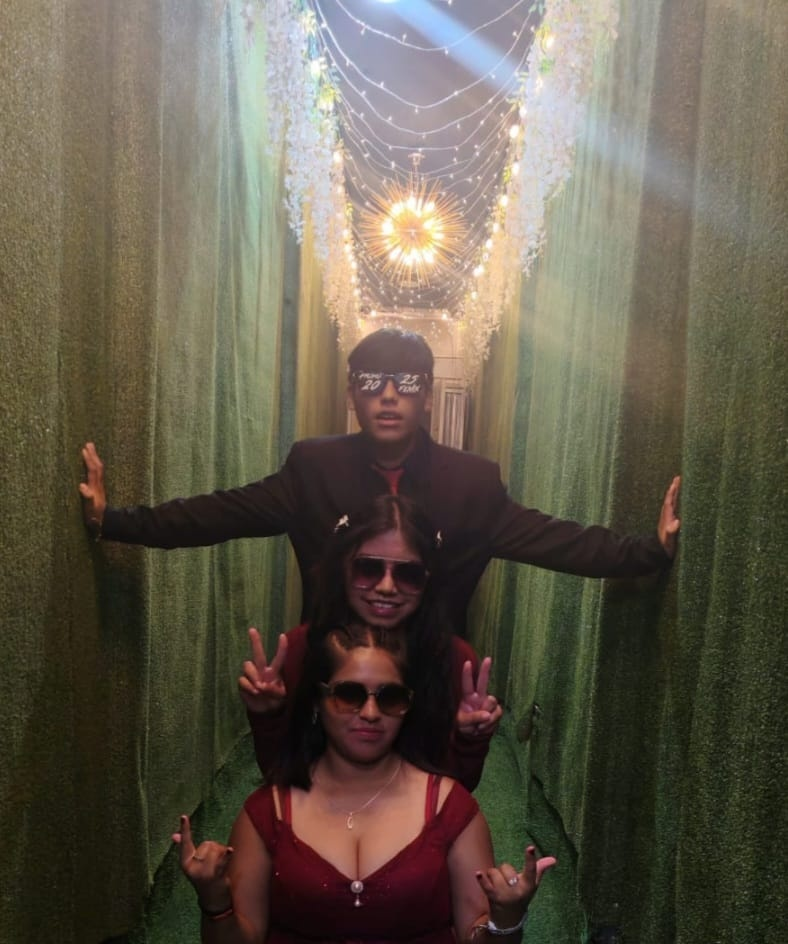
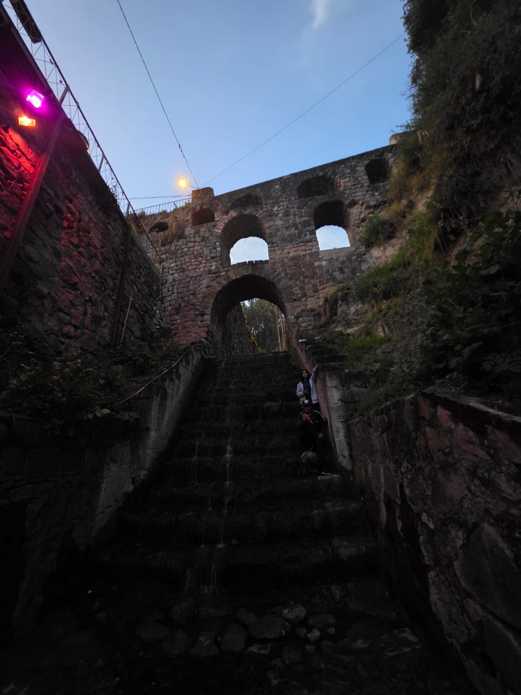
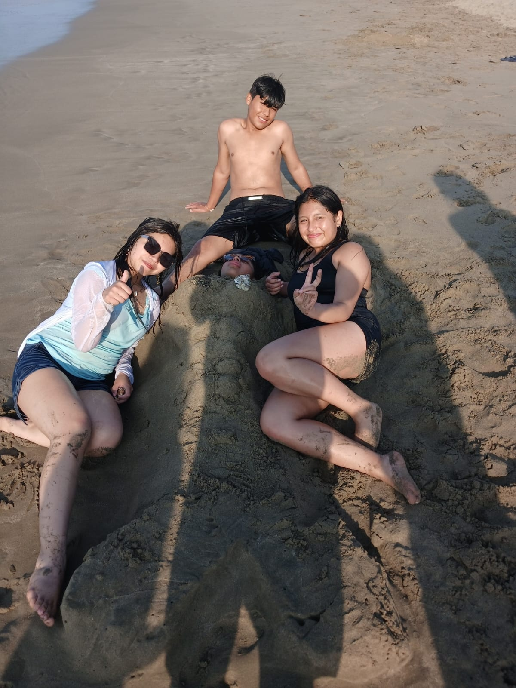

RECUERDO 01
De esos momentos que, aunque parezcan pequeños, terminan significando muchísimo.
PARA ALGUIEN MUY ESPECIAL
Porque hay personas que llegan a tu vida y terminan formando parte de ella.
UNA PEQUEÑA HISTORIA
Y entre tantas personas que uno conoce, hay algunas que terminan convirtiéndose en recuerdos, risas, conversaciones y momentos que uno nunca olvida.
01 — RECUERDOS

De esos momentos que, aunque parezcan pequeños, terminan significando muchísimo.


Risas, tonterías y momentos que simplemente se quedan.


Y todavía quedan muchísimas historias por crear.
02 — FRAGMENTOS
El día que te conocí y tenías como una chispa que hizo que me cayeras muy bien.
Todas las conversaciones, risas y tonterías que terminamos haciendo juntos.
Ese tatuaje temporal de un fénix que hicimos y que desapareció después de unos diez minutos.
Y todas esas veces en las que estuviste ahí tanto en los buenos momentos como en los malos.
03 — PARA TI
No sé exactamente en qué momento pasaste de ser alguien que conocí en el colegio a convertirte en una de las personas más importantes para mí.
Cuando te conocí tenías como una chispa que hizo que me cayeras muy bien. Y con el tiempo terminamos siendo mejores amigos.
Hemos compartido momentos, conversaciones, risas y un montón de tonterías que probablemente solo nosotros entendemos.
Desde jugar, salir y hacer cosas random, hasta ese famoso tatuaje temporal de un fénix que se borró después de diez minutos.
Pero más allá de todas esas tonterías, quiero agradecerte porque estuviste conmigo tanto en los buenos momentos como en los malos.
Para mí eres el mejor del mundo y de verdad quiero verte cumplir todas tus metas y conseguir todo lo que te propongas.
Espero que todavía nos queden muchísimos momentos por vivir, muchísimas risas y muchísimas historias que algún día podamos recordar.
Y quién sabe, algún día hasta podamos vivir juntos con Michi y recordar todas las tonterías que hicimos cuando éramos más jóvenes.
Siempre vas a ser mi Puka favorita y nunca te cambiaría por nadie.
Te quiero muchísimo, Puka.
FELIZ CUMPLEAÑOS
Por todo lo que has vivido y por todo lo que todavía nos falta vivir.
Todavía nos quedan muchísimos recuerdos por crear.